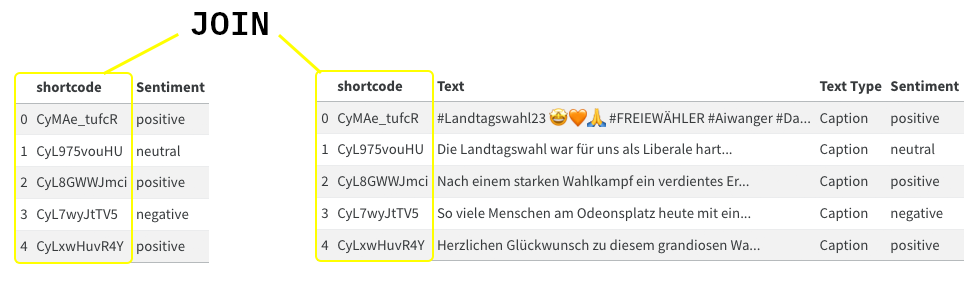

system_prompt = """
You are an advanced classifying AI. Your task is to classify the sentiment of a text. Sentiment can be either ‘positive’, ‘negative’, or ‘neutral’.
**Instructions**
1. Examine each row in the table under the 'Text' column.
2. For each row consisting of social media comments, classify the content into either ‘negative’, ‘neutral’, or ‘positive’.
3. Fill the 'Classification' column for the corresponding 'Text' row with your answer. Your answer MUST be one of [‘negative’, ‘neutral’, ‘positive’], and it should be presented in lowercase.
**Formatting**
Return a markdown table with the columns "shortcode" and "Classification"
"""Text Classification
From Documents to Markdown Tables
We use the tabulate python package to create markdown tables for as many tables as we manage to send within the model’s context window. Currently, the result_table token length (the mockup response) is calculated using the length of False. Replace the value if you expect longer classifications in this line:
current_result_table = tabulate(batched_data + [(row[meta], False)], headers=[meta, "Classification"], tablefmt="pipe")from tabulate import tabulate
from datetime import datetime
from gpt_cost_estimator import num_tokens_from_messages
def batch_rows_for_tables(df, system_prompt, column, meta, model="gpt-3.5-turbo-0613", **kwargs):
max_rows = kwargs.get("max_rows", 999)
if model == "gpt-4-0613":
max_tokens = 8192
if model == "gpt-4-1106-preview":
max_tokens = 128000 # This model has not been tested with the multidocument approach. It is only capable of 4096 tokens output, therefore we might run into trouble
if model == "gpt-3.5-turbo-0613":
max_tokens = 4096
"""Batch rows from the dataframe to fit within token limits and return as a list of markdown tables."""
tables = []
df[column] = df[column].astype(str)
pbar = tqdm(total=len(df))
while not df.empty:
current_tokens = 0
batched_data = []
batched_results = []
i = 0
for index, row in df.iterrows():
# Remove newline characters from the specific column
cleaned_data = row[column].replace('\n', ' ')
# Construct the table for the current batch
current_table = tabulate(batched_data + [(row[meta], cleaned_data)], headers=[meta, "Text"], tablefmt="pipe")
current_result_table = tabulate(batched_data + [(row[meta], False)], headers=[meta, "Classification"], tablefmt="pipe")
message = [
{"role": "system", "content": system_prompt},
{"role": "user", "content": current_table},
{"role": "assistant", "content": current_result_table}
]
tokens_needed = num_tokens_from_messages(message, model=model)
if tokens_needed <= max_tokens and i < max_rows:
current_tokens = tokens_needed
batched_data.append((row[meta], cleaned_data))
batched_results.append((row[meta], False))
df.drop(index, inplace=True)
i += 1
else:
# Stop when you've reached close to the max token count
pbar.update(len(batched_data))
break
# Convert batched rows to a markdown table and store in tables list
markdown_table = tabulate(batched_data, headers=[meta, "Text"], tablefmt="pipe")
tables.append(markdown_table)
pbar.close()
return tablesThe next command uses the above function to generate all necessary markdown tables. The column parameter of batch_rows_for_tables expects the name of the text column, the meta parameter expects the name of the identifier column. Additionally, we pass the dataframe, system_prompt, and MODEL to the function. Fill in the TEXT_COLUMN, IDENTIFIER, MODEL, and MAX_ROWS variables as needed. See the comments above each variable for more information.
#@markdown What's the column name of the text column?
TEXT_COLUMN = 'Text' # @param {type: "string"}
#@markdown What's the column name of the text column?
IDENTIFIER = 'shortcode' # @param {type: "string"}
#@markdown Which model do you want to use?
MODEL = "gpt-4-0613" # @param ["gpt-3.5-turbo-0613", "gpt-4-1106-preview", "gpt-4-0613"] {allow-input: true}
#@markdown Is there a maximum length of rows? (**Set a very high number, like 999, to disable this feature**)
MAX_ROWS = 999 # @param {type: "number", min:0}
# Create a copy of your df. This is important! The batching process removes processed rows from the df.
df_batch_copy = df.copy()
# Batching the tables, takes a few seconds (~1 Minute)
tables = batch_rows_for_tables(df_batch_copy, system_prompt, TEXT_COLUMN, IDENTIFIER, MODEL, max_rows=MAX_ROWS)Let’s inspect the table. This is one of many tables that will be sent to the model. (I set the MAX_ROWS to 5 to keep the example short. When working with this approach I usually use MAX_ROWS=999.)
print(tables[0])| shortcode | Text |
|:------------|:-----------------------------------------------------------------------------------------------------------------------------------------------------------------------------------------------------------------------------------------------------------------------------------------------------------------------------------------------------------------------------------------------------------------------------------------------------------------------------------------------------------------------------------------------------------------------------------------------------------------------------------------------------------------------------------------------------------------------------------------------------------------------------------------------------------------------------------------------------------------------------------------------------------------------------------------------------------------------------------------------------------------------------------------------------------------------------------------------------------------------------------------------------------------------------------------------------------------------------------------------------------------------------------|
| CyMAe_tufcR | #Landtagswahl23 🤩🧡🙏 #FREIEWÄHLER #Aiwanger #Danke #Landtagswahl |
| CyL975vouHU | Die Landtagswahl war für uns als Liberale hart. Wir haben alles gegeben, um die FDP wieder in den Landtag zu bringen, aber leider hat es nicht gereicht. Danke für euren Einsatz, egal ob beim Plakatieren, Flyern oder am Infostand. 💛 Wir Julis stehen für unsere Überzeugungen ein, auch wenn es gerade nicht gut läuft. Das macht uns aus! Das haben wir in diesem Wahlkampf gezeigt und das werden wir auch in der außerparlamentarischen Opposition zeigen. 💪 Du bist auch davon überzeugt, dass Freiheit und Eigenverantwortung eine Stimme in der Politik brauchen? Dann steh auch du jetzt für diese Überzeugung ein. Unter www.julis.de/mitglied-werden/ kannst du noch heute Mitglied der besten Jugendorganisation der Welt werden. 🚀 #freistart23 |
| CyL8GWWJmci | Nach einem starken Wahlkampf ein verdientes Ergebnis! 💪 Herzlichen Glückwunsch an die CSU und unsere bayrischen JUler, die in der nächsten Legislaturperiode für ein sicheres und stabiles Bayern arbeiten werden. Wir wünschen euch viel Erfolg und alles Gute für das Landtagsmandat (v.l.n.r.): Manuel Knoll, Konrad Baur, Daniel Artmann, Kristan von Waldenfels. |
| CyL7wyJtTV5 | So viele Menschen am Odeonsplatz heute mit einer klaren Botschaft: Wir stehen an der Seite Israels. Die massiven und brutalen Angriffe der Terrororganisation Hamas sind abscheuliche Verbrechen an unschuldigen Männern, Frauen und Kindern. Die Bilder und Videos der barbarischen Morde zerreißen einem das Herz. Der Terror der Hamas ist durch nichts zu rechtfertigen und muss sofort gestoppt werden. Israel hat ein völkerrechtlich verbrieftes Recht auf Selbstverteidigung. Wir Gedenken den Toten. Wir trauern mit den Familien und Angehörigen. Und wir bangen und hoffen mit den verschleppten Israelis. Es ist gut, dass die Bundesregierung die Entwicklungshilfe für die palestinensischen Gebiete eingefroren hat. Das ist richtig. Nicht richtig ist, dass Menschen in Deutschland die Angriffe der Hamas auf Jüdinnen und Juden feiern. Das ist mit nichts zu rechtfertigen und wir verurteilen es aufs schärfste. Wir hier in Deutschland und Bayern haben noch viel zu tun: Antisemitismus und auch israelbezogener Antisemitismus ist in der Mitte unserer Gesellschaft vorhanden. Es ist die Aufgabe des frisch gewählten Bayerischen Landtags noch mehr gegen Judenhass zu tun. 📸 @andreasgregor #standwithisrael #israel #münchen #bayern |
| CyLxwHuvR4Y | Herzlichen Glückwunsch zu diesem grandiosen Wahlsieg! Mit allen 12 JU-Direktkandidaten seid ihr in den hessischen Landtag gezogen 🎉 Wir gratulieren euch und wünschen euch viel Erfolg für den Start und die nächsten fünf Jahre im Parlament (v.l.n.r.): Kim-Sarah Speer, Frederik Bouffier, Sebastian Sommer, Lucas Schmitz, Sebastian Müller, Christin Ziegler, Marie-Sophie Künkel, Maximilian Schimmel, Christoph Mikuschek, Patrick Appel, Maximilian Bathon und Dominik Leyh! |We can also inspect them using Markdown formatting in the notebooks:
from IPython.display import Markdown, display
display(Markdown(tables[0]))| shortcode | Text |
|---|---|
| CyMAe_tufcR | #Landtagswahl23 🤩🧡🙏 #FREIEWÄHLER #Aiwanger #Danke #Landtagswahl |
| CyL975vouHU | Die Landtagswahl war für uns als Liberale hart. Wir haben alles gegeben, um die FDP wieder in den Landtag zu bringen, aber leider hat es nicht gereicht. Danke für euren Einsatz, egal ob beim Plakatieren, Flyern oder am Infostand. 💛 Wir Julis stehen für unsere Überzeugungen ein, auch wenn es gerade nicht gut läuft. Das macht uns aus! Das haben wir in diesem Wahlkampf gezeigt und das werden wir auch in der außerparlamentarischen Opposition zeigen. 💪 Du bist auch davon überzeugt, dass Freiheit und Eigenverantwortung eine Stimme in der Politik brauchen? Dann steh auch du jetzt für diese Überzeugung ein. Unter www.julis.de/mitglied-werden/ kannst du noch heute Mitglied der besten Jugendorganisation der Welt werden. 🚀 #freistart23 |
| CyL8GWWJmci | Nach einem starken Wahlkampf ein verdientes Ergebnis! 💪 Herzlichen Glückwunsch an die CSU und unsere bayrischen JUler, die in der nächsten Legislaturperiode für ein sicheres und stabiles Bayern arbeiten werden. Wir wünschen euch viel Erfolg und alles Gute für das Landtagsmandat (v.l.n.r.): Manuel Knoll, Konrad Baur, Daniel Artmann, Kristan von Waldenfels. |
| CyL7wyJtTV5 | So viele Menschen am Odeonsplatz heute mit einer klaren Botschaft: Wir stehen an der Seite Israels. Die massiven und brutalen Angriffe der Terrororganisation Hamas sind abscheuliche Verbrechen an unschuldigen Männern, Frauen und Kindern. Die Bilder und Videos der barbarischen Morde zerreißen einem das Herz. Der Terror der Hamas ist durch nichts zu rechtfertigen und muss sofort gestoppt werden. Israel hat ein völkerrechtlich verbrieftes Recht auf Selbstverteidigung. Wir Gedenken den Toten. Wir trauern mit den Familien und Angehörigen. Und wir bangen und hoffen mit den verschleppten Israelis. Es ist gut, dass die Bundesregierung die Entwicklungshilfe für die palestinensischen Gebiete eingefroren hat. Das ist richtig. Nicht richtig ist, dass Menschen in Deutschland die Angriffe der Hamas auf Jüdinnen und Juden feiern. Das ist mit nichts zu rechtfertigen und wir verurteilen es aufs schärfste. Wir hier in Deutschland und Bayern haben noch viel zu tun: Antisemitismus und auch israelbezogener Antisemitismus ist in der Mitte unserer Gesellschaft vorhanden. Es ist die Aufgabe des frisch gewählten Bayerischen Landtags noch mehr gegen Judenhass zu tun. 📸 @andreasgregor #standwithisrael #israel #münchen #bayern |
| CyLxwHuvR4Y | Herzlichen Glückwunsch zu diesem grandiosen Wahlsieg! Mit allen 12 JU-Direktkandidaten seid ihr in den hessischen Landtag gezogen 🎉 Wir gratulieren euch und wünschen euch viel Erfolg für den Start und die nächsten fünf Jahre im Parlament (v.l.n.r.): Kim-Sarah Speer, Frederik Bouffier, Sebastian Sommer, Lucas Schmitz, Sebastian Müller, Christin Ziegler, Marie-Sophie Künkel, Maximilian Schimmel, Christoph Mikuschek, Patrick Appel, Maximilian Bathon und Dominik Leyh! |
Run the Multidocument Request
he following code snippet uses my gpt-cost-estimator package to simulate API requests and calculate a cost estimate. Please run the estimation whne possible to asses the price-tag before sending requests to OpenAI!
Fill in the MOCK, RESET_COST, SAMPLE_SIZE, CLASS_NAME, and FILE_NAME variables as needed (see comments above each variable.)
from tqdm.auto import tqdm
import json
import ast
from datetime import datetime
from io import StringIO
#@title Run the Multidocument Request
#@markdown T
#@markdown Do you want to mock the OpenAI request (dry run) to calculate the estimated price?
MOCK = False # @param {type: "boolean"}
#@markdown Do you want to reset the cost estimation when running the query?
RESET_COST = True # @param {type: "boolean"}
#@markdown How many **tables** do you want to send? Enter $0$ for all.
SAMPLE_SIZE = 1 # @param {type: "number", min: 0}
#@markdown Filename for the **new** table that only contains sentiments.
FILE_NAME = '/content/drive/MyDrive/2023-12-08-Posts-LTW-Sentiment' # @param {type: "string"}
#@markdown Name for the classification column
CLASS_NAME = 'Sentiment' # @param {type: "string"}
def safe_literal_eval(value):
if isinstance(value, (str, bytes)):
try:
return ast.literal_eval(value)
except ValueError:
return value # or handle the error in another way if you want
return value
def parse_response(response):
# Determine if the response is a list or markdown table
if ':' in response.split('\n')[0]:
# List
lines = [line.strip() for line in response.strip().split('\n')]
data = [(int(line.split(': ')[0]), line.split(': ')[1]) for line in lines]
# Convert the parsed data into a DataFrame
result_df = pd.DataFrame(data, columns=['uuid', 'Positioning'])
else:
# Markdown Table
csv_data = '\n'.join([','.join(line.split('|')[1:-1]) for line in response.split('\n') if line.strip() and not line.startswith('|:')])
result_df = pd.read_csv(StringIO(csv_data.strip()), sep=",", skipinitialspace=True)
# Striping Whitespaces
result_df.columns = [col.strip() for col in result_df.columns]
if 'Classification' in result_df.columns:
# Renaming the column to fit the rest of the project.
result_df = result_df.rename(columns={"Classification": CLASS_NAME})
result_df = result_df.applymap(lambda x: x.strip() if isinstance(x, str) else x)
return result_df
try:
# Attempt to read the CSV file into a DataFrame
new_df = pd.read_csv(FILE_NAME)
except FileNotFoundError:
# If the file is not found, create an empty DataFrame with the specified columns
new_df = pd.DataFrame(columns=[IDENTIFIER, CLASS_NAME])
# Reset Estimates
CostEstimator.reset()
print("Reset Cost Estimation")
if 0 < SAMPLE_SIZE <= len(tables):
filtered_tables = tables[:SAMPLE_SIZE]
else:
filtered_tables = tables
for table in tqdm(filtered_tables):
result = run_request(system_prompt, table, MODEL, MOCK)
if result and not MOCK:
# Parsing the data
result_df = parse_response(result.choices[0].message.content)
# Append it to master_df
new_df = pd.concat([new_df, result_df], ignore_index=True)
# Save Progress
new_df.to_csv(FILE_NAME, index=False)
print()
if not MOCK:
print(f"Saved {FILE_NAME}.")
new_df = new_df.dropna(subset=[IDENTIFIER])
new_df[CLASS_NAME] = new_df[CLASS_NAME].apply(safe_literal_eval)
uuid_to_classification = new_df.set_index(IDENTIFIER)[CLASS_NAME].to_dict()
mask = df[IDENTIFIER].isin(uuid_to_classification.keys())
df.loc[mask, CLASS_NAME] = df.loc[mask, IDENTIFIER].replace(uuid_to_classification)
print()Reset Cost Estimation
Cost: $0.1408 | Total: $0.1408
Saved /content/drive/MyDrive/2023-12-08-Posts-LTW-Sentiment.
new_df.head()| shortcode | Sentiment | |
|---|---|---|
| 0 | CyMAe_tufcR | positive |
| 1 | CyL975vouHU | neutral |
| 2 | CyL8GWWJmci | positive |
| 3 | CyL7wyJtTV5 | negative |
| 4 | CyLxwHuvR4Y | positive |
The code above expects the GPT-API to return results in a markdown formatted table (see above). We keep appending the API responses to a new_df where we temporarily store the classifications. For each loop (i.e. each time received a classification), we store the results on Google Drive as a backup, since each result has a price tag. In case of error we can resume the operation later without the need to start all over again. The code above does not provide the necessary logic for that, but you should be able to quickly add it.
Once the loop finished, we use the shortcode column from the API response and join the classification data with df:

And finally our df looks as follows. As outlined at the start of the text exploration chapter, we want to fill one dataframe piece by piece with more and more classifications.
df[mask][['shortcode', 'Text', 'Text Type', 'Sentiment']].head()| shortcode | Text | Text Type | Sentiment | |
|---|---|---|---|---|
| 0 | CyMAe_tufcR | #Landtagswahl23 🤩🧡🙏 #FREIEWÄHLER #Aiwanger #Da... | Caption | positive |
| 1 | CyL975vouHU | Die Landtagswahl war für uns als Liberale hart... | Caption | neutral |
| 2 | CyL8GWWJmci | Nach einem starken Wahlkampf ein verdientes Er... | Caption | positive |
| 3 | CyL7wyJtTV5 | So viele Menschen am Odeonsplatz heute mit ein... | Caption | negative |
| 4 | CyLxwHuvR4Y | Herzlichen Glückwunsch zu diesem grandiosen Wa... | Caption | positive |